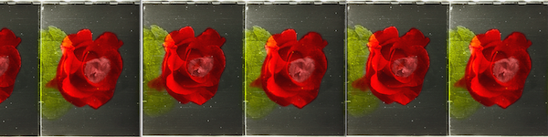
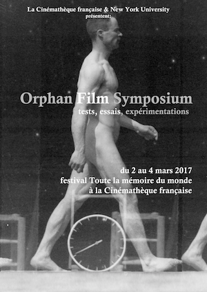
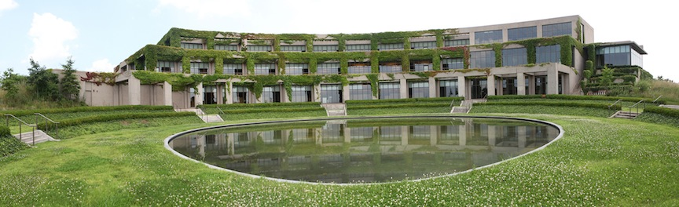

In 2021, NYU is deleting the server on which this website resided since 2007. All content is archived and will live in other forms. Find all things related to the NYU Orphan Film Symposium at WP.nyu.edu/OrphanFilm.
The 12th Orphan Film Symposium -- devoted to Water, Climate, and Migration -- migrated from an in-person event at Eye Filmmuseum in Amsterdam to "Orphans Online," May 26-29, 2020. Screenings and live events with nearly 80 presenters were webcast and recorded for playback. Read the program listings here.
Video recordings of the 10 live sessions are here: orphan.film.
Other stand-alone movies from Orphans 2020 are viewable on the NYU Cinema Studies page.
Below: The event as it might have been if the coronavirus had not appeared.

The 12th biennial NYU Orphan Film Symposium is devoted to the intertwining themes of Water, Climate, and Migration. Join us May 23 - 27, 2020, at Eye Filmmuseum in Amsterdam for the event that also marks the 6th annual Eye International Conference exploring archival and academic debates among film heritage professionals, scholars, archivists, curators, artists, and restorers.
Presenters selected from an open Call for Proposals will address these urgent but perennial subjects by examining how neglected works have represented, imagined, and recorded these phenomena throughout the history of moving images. As always, the Orphan Film Symposium will again showcase a wide array of rare and rediscovered orphan films – silent, experimental, independent, scientific, documentary, educational, newsreel, sponsored, nontheatrical, fragmentary, amateur, industrial, personal, incomplete, and other films from outside the commercial mainstream.
Opening screenings on Saturday, May 23. Full days and evenings of symposium presentations and screenings on Sunday, Monday, and Tuesday. Further activities at the nearby Eye Collection Centre on Wednesday, May 27.
Questions? conference@eyefilm.nl and orphanfilmsymposium@gmail.com
Updates also at www.EyeFilm.nl and www.NYU.edu/orphanfilm.
RADICALS, a special edition of the NYU Orphan Film Symposium at the Austrian Film Museum in Vienna, June 6-8, 2019. An international gathering of archivists, curators, scholars, artists, students, and others dedicated to saving, studying, and screening radically diverse types of neglected works.
The line-up and itinerary.
Thursday, June 6
15:00 to 21:00 Registration at Filmmuseum (Augustinerstraße 1)
19:00 Movements, a program in the film series “There are no rules!” Restored and Revisited Avant-Garde Films from the Netherlands. Introduced by curator Simona Monizza (EYE Netherlands Film Museum)
20:30 Symposium reception party at Filmmuseum lobby and bar
21:30 Film Program 0
• A Few Drunkards at the Mars Bar (Masha Godovannaya, US, 2001, 1 min) Introduced by Masha Godovannaya as homage to Jonas Mekas.
• tx-reverse (Martin Reinhart & Virgil Widrich, Austria, 2018, 5 min) Introduced by Martin Reinhart and Virgil Widrich.
Friday, June 7
8:30 Registration opens at Filmmuseum (coffee & croissant discount offer)
9:30 Session 0
Welcome and opening remarks
Michael Loebenstein (Austrian Film Museum), Dan Streible (NYU Cinema Studies)
Why Radicals?
10:00 Session 1
Grazia Ingravalle (Brunel University London) British or Indian Colonial Film Heritage? Towards a Decolonization of Film Archiving and Curation
Panorama of Calcutta, India, from the River Ganges (Warwick Trading Co., UK, 1899, 35mm, 2 min)
Kaveh Askari (Michigan State University) & Hadi Gharabaghi (New York University) MSU and National Iranian Radio and Television’s Iran Film Series: Ancient Iran: Part 2, 3000-800 BC (Margaret Mehring and Mohammad Ali Issari, US/Iran, 1977)
11:15 Coffee break
11:45 Session 2
Brian Meacham (Yale Film Study Center) & Josh Morton (filmmaker) Radical Theater: The Black Panthers, New Haven, and Puppet Show (Josh Morton, US, 1970, 16mm, 9 min)
Kimberly Tarr (NYU Libraries) Angela Davis Report (DDR, 1972, 16mm, 19 min) new preservation from the Communist Party of the United States of America Collection at NYU Tamiment Library
13:00 Lunch break
14:00 Session 3
Thomas Christensen & Katrine Madsbjerg (Danish Film Institute) Unidentified International Socialists, or: How Uncle Sam Traveled from Vienna to Copenhagen: Onkel Sams Wienerrejse (Uncle Sam's Trip to Vienna, Austria, 1931)
Enrique Fibla-Gutierrez (Filmoteca de Catalunya) & Pablo La Parra-Pérez (Elías Querejeta Film School) The Wretched of the Spanish Earth: Fragments from Spanish Radical Film Archives, 1930s-1970s
David Landolf & Brigitte Paulowitz (Lichtspiel / Kinemathek Bern) Amateur Filmmaking for a Greater Cause: René Betge’s Propaganda for the Lebensreform Movement “die neue zeit,” 1929-1939
15:45 Coffee break
16:15 Session 4
Tania López Espinal (Cineteca Nacional México) “Viva Cristo Rey!”: Manuel Ramos, 9.5mm Films, and the Cristero War, 1926-1929
José Miguel Palacios (Universidad Alberto Hurtado, Santiago) & Elizabeth Ramírez-Soto (San Francisco State University) Redefining Political Cinemas in Exile: Chilean Filmmakers After 1973
• Pinochet: asesino, fascista, traidor, agente del imperialismo (Sergio Castilla, Sweden, 1974, 16mm, 5 min) print courtesy of the Swedish Film Institute
• La femme au foyer (The Housewife; Valeria Sarmiento, France, 1976, 23 min) courtesy of Groupe de Recherches et d’Essais Cinématographiques
Léa Morin (L'Atelier de l'Observatoire, Casablanca) An Unknown Moroccan Cinema: Mostafa Derkaoui’s Student Films in Poland, 1969-1971
• Ludzie z piwnicy (People from the Vault, 1969, excerpt)
• Gdzieś, pewnego dnia (A Day Somewhere, 1971, 35mm, 20 min)
18:00 Conference dinner at Al Caminetto da Mario (Krugerstraße 4)
20:00 Film Program 1 (open to public)
• The Black and the Green (St. Clair Bourne, US, 1983, 16mm, 45 min)
Presented by Judith Bourne & Jacob Perlin (Metrograph, NYC)
Saturday, June 8
8:30 Registration opens at Filmmuseum (coffee & croissant discount offer)
Stefanie Zingl (Austrian Film Museum / Ludwig Boltzmann Institute) The Sensation of Color: Mroz short-lived 9.5mm Color Film
Testfilm (Josef Mroz, Austria, 1930, 2 min)
Farbenfilmversuche (Josip Sliškovič, Austria, 1931-32, 5 min)
Giorgio Trumpy, Josephine Diecke, David Pfluger, & Barbara Flueckiger (University of Zurich) Reconsidering Rigid Procedures of Color Film Digitization: Case Studies in Toning, Lenticular Processes, Chromogenic Stocks, and Mroz-Farbenfilm
Sandra Ladwig (University of Applied Arts Vienna) The Amateur’s Provocation of Perception: René Tajoburg’s Irrsinn rot weiss gelb (Frenzy in Red, White, Yellow; Austria, ca. 1970, 6 min)
10:45 Coffee break
11:15 Session 6
Rommy Albers, Simona Monizza (EYE Filmmuseum, Amsterdam) & Floris Paalmen (University of Amsterdam) Cineclub Amsterdam Freedom Films at the International Institute of Social History
Mara Mattuschka & Hans Werner Poschauko (Maria Lassnig Foundation, Vienna) Maria Lassnig's Films in Progress: An Artist's Approach to Restoring Unfinished Works
13:00 Lunch
14:15 Session 7
Hieyoon Kim (University of Wisconsin-Madison) Toward a New Cinema: The Seoul Film Collective and Film Activism in the 1980s, excerpts from Pannori Arirang (1982) and Surise (South Korea, 1984)
Eva Näripea (National Archives of Estonia / Estonian Academy of Arts) & Hardi Volmer (Nukufilm) Päratrust [Butt Trust] Heritage
• Kalkar (Estonia, USSR, 1980, 11 min) a punk satire of Tarkovsky’s Stalker
Masha Godovannaya (Academy of Fine Arts, Vienna) Silent Horizon: Evgeny Yufit and Early Necrorealist Cinema
• Lesorub (Woodcutter, USSR, 1985, 35mm, 8 min)
• Vesna (Spring, USSR, 1987, 35mm, 10 min)
15:30 Coffee Break
16:00 Session 8Joachim Schätz (University of Vienna) Avant-garde Mimicry • Mit unbekanntem Ziel (Destination Unknown; Austrian Chamber of Commerce & Institute for the Promotion of Trade, Austria, 1963, 35mm, 23 min)
Martin Reinhart (University of Applied Arts Vienna) The Data Loam Project: Challenging the Dystopia of the "Information Age"
Tara Merenda Nelson (Visual Studies Workshop, Rochester, NY) Radical Collaboration: Robert Frank in Rochester
17:00 Session 9: Open discussion about Radicals
18:00 Dinner break
20:00 Film Program 2 (open to public)
• Tsaar Muhha (Tsar of the Flies; Estonia, USSR, 1981, 3 min) Introduced by Eva Näripea.
• Premiere screening of a 1930s nitrate iteration of Hans Richter’s Every Day (UK, 1929, 16 min) Introduced by Caroline Fournier (Cinémathèque Suisse).
• About Us (Robert Frank & VSW students, US, 1972, 16mm, 38 min) Introduced by Tara Merenda Nelson.
21:30 Closing party at Filmmuseum lobby and bar
* All silent screenings will be accompanied by Filmmuseum’s resident pianist Elaine Loebenstein.
Evening screenings curated by Jurij Meden & Michael Loebenstein (Austrian Film Museum) with Dan Streible (NYU Cinema Studies)
Registration is open to all. Click here for details.
Announcement: October 15, 2018
June 7 & 8, 2019, the Austrian Film Museum in Vienna hosts "Radicals," a two-day edition of the NYU Orphan Film Symposium.
Call for Presentations
The Austrian Film Museum, longtime home of unconventional cinematic expressions, welcomes a line-up of radical orphan films as a finale to its 2019 spring season.
Scholars, archivists, curators, and artists will explore a variety of neglected films related to diverse forms of radical style, practice, and politics. What examples of radical filmmaking are there to be discovered? How have various stripes of radical politics been represented or documented on screen? How are radical new practices and ideas in archiving and preservation challenging traditional approaches?
In addition to unveiling rarities from the Film Museum’s own collection, the symposium will include content selected from responses to this Call for Presentations.
We invite one-page proposals for presentations (15 to 45 minutes), especially those that include screening seldom-seen material. New media productions using archival or found footage in a challenging manner can be considered too.
E-mail proposals to orphanfilmsymposium@gmail.com
Deadline: December 10, 2018
Summarize the significance of the material and topic; identify AV material to be screened by title, running time, and format. Please send text as a file attachment.
Presenters should commit to attend the full symposium. Registration and attendance is open to all, beginning January 2019. Watch this space. . . .
___________________________________
Read the complete Orphans 11 program here.
NYU Tisch School of the Arts, Department of Cinema Studies, and its Moving Image Archiving and Preservation Program hosted the 11th Orphan Film Symposium, April 11-14, 2018, at Museum of the Moving Image. Scholars, archivists, media artists, curators, preservationists, collectors, librarians, students, and other enthusiasts explored a variety of neglected works and moving image artifacts.
Inspired by Plato's Symposium (360 BCE), the theme was love. Love in the many senses of the word -- romantic, spiritual, filial, religious, parental, empathic. Love of others, humanity, planet, country, family, animals, food, pleasure, art, peace, place, learning. Or as Plato might say agápe, eros, philía, and storgē. Cinephilia itself opened the door to all kinds of films we love. Among the orphan categories elated to love: amateur films and home movies; advocacy films; works made by religious or charitable organizations; romance and melodrama; erotica, porn, dating do's and dont's; advertising and animation; patriotic pictures; cult films; movies for children. What films have inspired love (or hate), passions, or devotion?

Merci, Cinémathèque française!

The Cinémathèque française and NYU Cinema Studies co-hosted a special edition of the Orphan Film Symposium in Paris, March 2-4, 2017.
The theme: Tests, essais et expérimentations
Orphans 2017 / Orphelins de Paris
March 2-4, 2017
Click here to see the program. Films ranging from 1894 to 1994, from France, the US, UK, Poland, Italy, Denmark, Lithuania, Serbia, Algeria, Belgium, India, Mexico, and the Netherlands. See a wonderous variety of outtakes, kinetscope movies, camera tests, partially edited newsreels, 90mm scientic studies, 35mm medical films, Super 8 experiments, 16mm avant garde pieces, images inédites, rushes, unfinished films, silent cinema, unreleased works, never-used newsfilm, amateur narratives, home movies, military footage, student films, promotional documentaries, early sound newsreel tests, and restored classics.
New York University Cinema Studies and its Moving Image Archiving and Preservation Program joined with the Library of Congress National Audio-Visual Conservation Center for the tenth international gathering of archivists, scholars, curators, preservationists, technical experts, artists, and media-makers devoted to screening and discussing orphan films.
A timeline of the Orphan Film Symposium, 1999 - 2016 . . .
designed by Martha Diaz & Erica Gold (NYU MIAP)